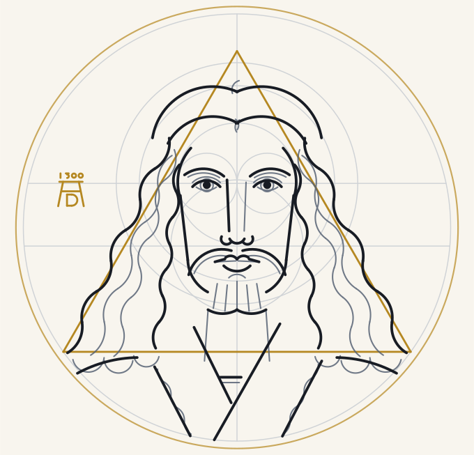

Compass-and-Straightedge Portraits¶
Line-and-Circle Author Medallions for the GEOMETOR Digital Library
To give every author gallery, person card, and book title page a unified geometric signature, GEOMETOR Press constructs vector portraits strictly from straight lines and circular arcs—with zero Bézier curves—calibrated over verified public-domain masterworks.
1. Canonical Medallion Specification¶
Coordinate Frame:
viewBox="-102 -106 204 196"with inner medallion circle(0, -8), radiusR = 92, and outer gold rimr = 95.2.Uniform Eye-Line & Head Scale: Every subject’s eyes align near
y = -27with cranial circleR ≈ 26so frontal and three-quarter portraits sit on one steady horizontal horizon across collection cards.Permitted Primitives:
<line>,<circle>, and circular-arc<path d="M ... A ...">only (Euclid III.12 externally tangent circular arcs for curls, beards, hoods, and drapery).Four Visual Layers: 1. Scaffold (
0.44): Medallion ring, bilateral axes, cranial circleR, golden circleR·φ, and Vesica eye circles. 2. Golden Signature (0.85): Subject’s signature geometric construction or monogram. 3. Detail (0.62): Upper eyelid fold, delicate lower lid, iris ring, and interior curl/drapery strands. 4. Primary (1.15): Connected cranial, brow, eye, nose, lip, beard, and collar contours.
2. Study 01 — Albrecht Dürer (1500)¶
Constructed over Dürer’s Self-Portrait at Twenty-Eight (1500, Alte Pinakothek, Munich — Public Domain). Placing the cranial circle R = 26 at (0, -27) hits the center hairline at -R, both temples at ±R, the base of the nose at +R, and both pupils at ±R/2 = ±13, while the cascading locks follow exact 60° rays from apex (0, -84) via Euclid III.12 tangent circular arcs.
Standalone Studio:
demos/durer_portrait_studio.html(Open Fullscreen)Vector Exports:
_static/portraits/durer_dark.svg&_static/portraits/durer_light.svg

durer_dark.svg)
durer_light.svg)3. Verified Public-Domain Reference Queue¶
All portrait metadata, Wikimedia Commons identifiers, and museum holdings are tracked in resources/portraits.yaml and resources/portraits.json:
Queue |
Subject |
Verified Public-Domain Source |
Signature Geometric Motif |
|---|---|---|---|
Next 1 |
Euclid ( |
Urbino Baroque portrait holding Elements (Getty / Google Art Project; local ref staged) |
Book I Prop. 1 Vesica Piscis & Equilateral Triangle |
Next 2 |
Plato ( |
Raphael, The School of Athens (1509–1511, Vatican — |
Divided Line (Republic VI) & dodecahedral projection |
Next 3 |
Aristotle ( |
Raphael, The School of Athens (1509–1511, Vatican — |
Continuum axis & syllogism triangle |
Next 4 |
Fra Luca Pacioli ( |
Jacopo de’ Barbari (1495, Capodimonte, Naples — |
Suspended rhombicuboctahedron & Golden Ratio dividers |
Next 5 |
Johannes Kepler ( |
Authentic Linz portrait ( |
Kepler Right Triangle \((1, \sqrt{\phi}, \phi)\) & nested spheres |
Queued |
Leonhard Euler ( |
Jakob Emanuel Handmann pastel (1753, Kunstmuseum Basel — |
Euler Line ( |